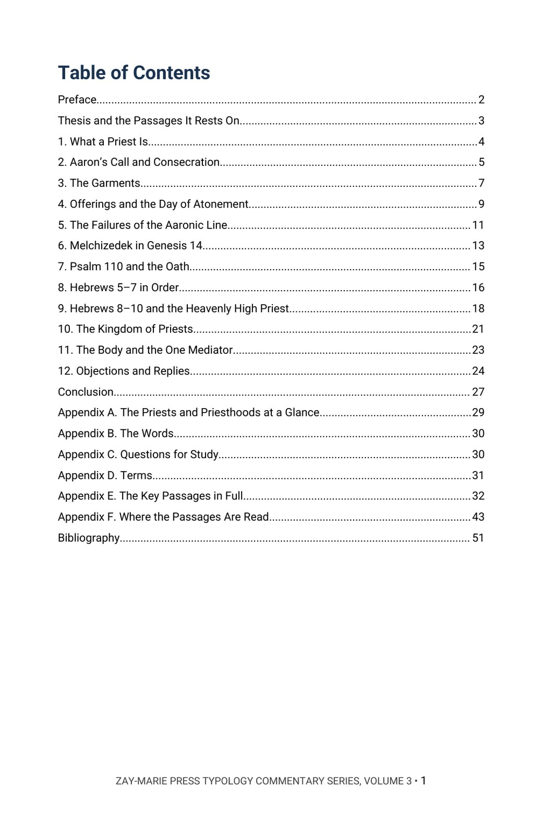
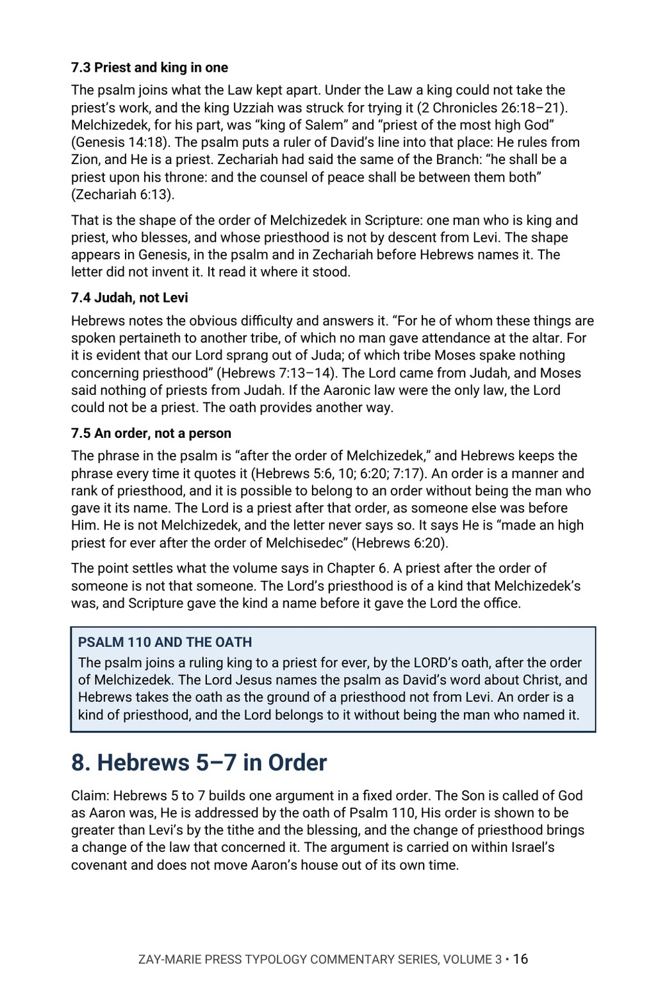
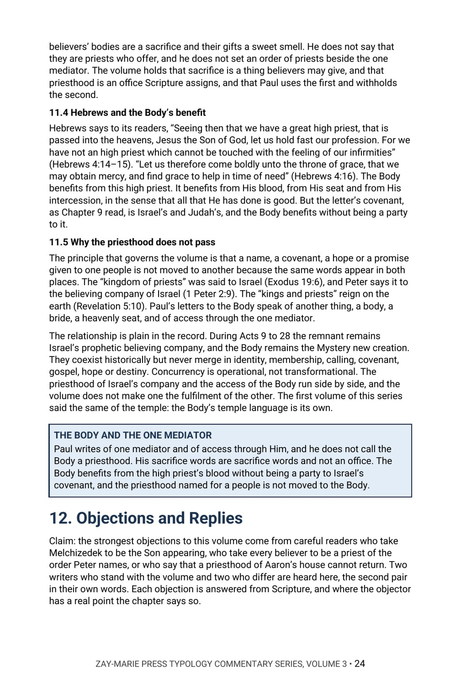

Priesthood Typology: Aaron, Melchizedek & Christ
Two Orders, One High Priest, and Where the Priesthood Does Not Pass to the Body
Whose priesthood is it, and what does the Son hold?
God appointed Aaron’s house to a priesthood by a perpetual statute, and Scripture names another order, Melchizedek’s, for the Son. This commentary reads both in order, from the call and the garments to the oath of Psalm 110 and the heavenly sanctuary of Hebrews.
It then follows the priesthood named for a people, from Sinai to Isaiah, Ezekiel, Peter and the Revelation, and sets Paul’s one mediator beside it. In Chapter 12 it sets its reading beside modern writers who see it differently.
Read first: the Digital Studies lay the groundwork for this volume in Study 67, Melchizedek.
A Commentary That Argues a Position
This volume does not survey what has been taught about the priesthood and leave the choice to the reader. It states what the author believes the passages teach, sets out the evidence from the Law, the Psalms, the Prophets, the letters and the Revelation, and answers the strongest objections, naming the modern writers who hold them.
It is the third volume of the Typology Commentary Series. It is a different kind of book from the Digital Studies, which walk through passages and report what the text says. Scripture is quoted from the King James Version throughout, and the writers named in Chapter 12 are quoted only from words the author has read in full.
Related Reading
Study 67 — Melchizedek A Digital Study that walks the passages on the king of Salem verse by verse.
Prophetic Identity, Volume 3 — The New Covenant The covenant Hebrews quotes, and who is party to it.
Typology, Volume 1 — Tabernacle & Temple Typology The first volume of this series, on the pattern shown in the mount.
From the Altar to the Heavenly Sanctuary
What a Priest Is
See what Scripture means by a priest and why Israel’s priesthood begins with a calling and not a choice.
Aaron’s Call and Offices
Follow the call, the consecration, the garments and the offerings, and mark what the Law fenced and why.
The Day of Atonement
Read the one great day in order, with the failures of the Aaronic line beside it.
Melchizedek and the Oath
Read Genesis 14 and Psalm 110 as written, then Hebrews 5–7 in order, and test what is claimed for the man and the order.
The Heavenly High Priest
Trace Hebrews 8–10: the sanctuary, the covenant and the one offering, and who stands as party to it.
The Kingdom of Priests and the Body
Follow the priesthood of a people from Sinai to the Revelation, then hear the modern writers who disagree answered from the text.
Read the Word in Its Context
Exodus 29:9
“And thou shalt gird them with girdles, Aaron and his sons, and put the bonnets on them: and the priest’s office shall be theirs for a perpetual statute.”
Leviticus 16:30
“For on that day shall the priest make an atonement for you, to cleanse you, that ye may be clean from all your sins before the LORD.”
Genesis 14:18
“And Melchizedek king of Salem brought forth bread and wine: and he was the priest of the most high God.”
Psalm 110:4
“The LORD hath sworn, and will not repent, Thou art a priest for ever after the order of Melchizedek.”
Hebrews 7:3
“Without father, without mother, without descent, having neither beginning of days, nor end of life; but made like unto the Son of God; abideth a priest continually.”
Hebrews 7:24
“But this man, because he continueth ever, hath an unchangeable priesthood.”
Exodus 19:6
“And ye shall be unto me a kingdom of priests, and an holy nation.”
1 Timothy 2:5
“For there is one God, and one mediator between God and men, the man Christ Jesus.”
What This Book Sets Out to Do
God appointed Aaron’s house, and Scripture names another order, Melchizedek’s, for the Son.
The volume asks of each priesthood whom it serves, in what sanctuary, and where the priesthood named for a people ends.
Preview the Volume Before You Purchase
Click any page to enlarge it for reading.


Table of Contents
See the full order of the argument, from the Preface to the Bibliography.



The Argument at Work
See the method: the passage read in order, marking what the text names and what it leaves unsaid.


Objections and Replies
See the modern voices named on both sides, and the answer to each.
A Full Commentary on Priesthood Typology
52-Page Digital PDF
Cover and a fully numbered interior.
Twelve Chapters
From what a priest is to the objections and replies.
Objections and Replies
Modern voices named, with each objection answered from the text.
The Priests Traced
Aaron, Melchizedek, the Son and the kingdom of priests, read in order.
Comparison Tables
The garments, the offices and the passages read side by side.
Conclusion
The position restated in full, with a closing table.
Six Appendices
The priests at a glance, the words, study questions, terms, fifty-three key passages in full and a verse-by-verse index of where the passages are read.
Bibliography
Every work cited, listed by author and title.
Priesthood Typology: Aaron, Melchizedek & Christ
52-page digital PDF · For personal use
Part of the Typology Commentary Series. Own all five volumes: $54.99 (save $19.96) · See the series bundle →
← Back to the Commentary Collection